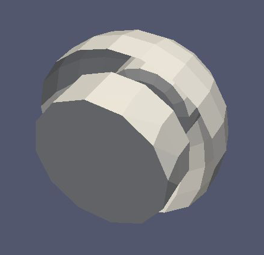
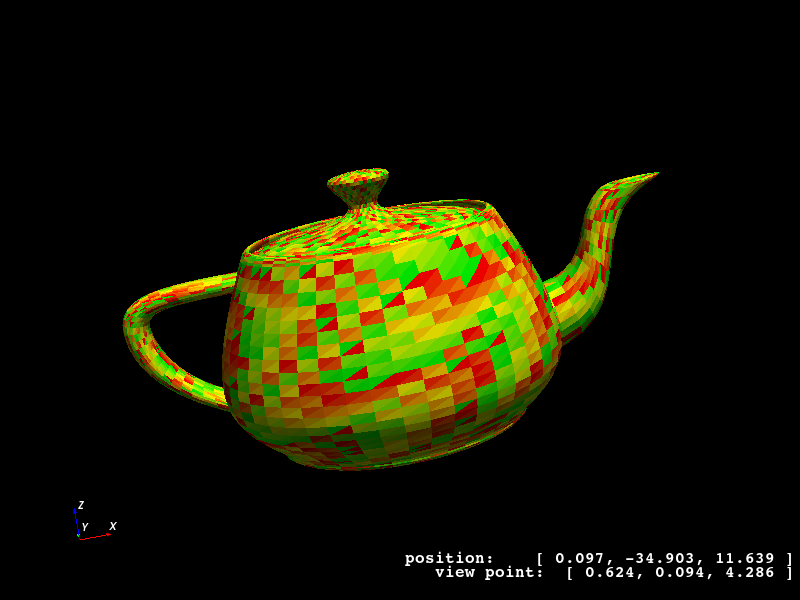

Complex Shapes in KGeoBag
This section describes the more complicated shapes available in KGeoBag. Since as of yet, KGeoBag lacks the ability to perform boolean operations on solids (constructive solid geometry), shapes which cannot be represented as an assembly of basic shapes must be explicitly defined in C++. However, to augment the basic shapes, KGeoBag provides some additional complex shapes that are commonly encountered in experimental structures such as vacuum chambers, etc.
Some of the examples in this section make use of the the more advanced features of the XML parser, including loops, conditional statements, and equation evaluation.
Surfaces
Pump Port
The shape creates a tube-like surface with circular or rectangular pump ports (e.g. for vacuum chambers). The coordinates (x,y,z) are the end points of the ports. The ports can only be created in radial direction.

Works with MeshViewer: Yes.
Works with GeometryViewer: No.
An XML example is as follows:
<port_housing_surface name="example_port_housing_surface">
<port_housing x1="0." y1="0." z1="-1." x2="0." y2="0." z2="1." radius="0.4" longitudinal_mesh_count="50" axial_mesh_count="50">
<circular_port x="1.5" y="1.5" z="-.3" radius="0.33"/>
<rectangular_port x="0." y="1." z=".3" length="0.3" width=".15"/>
<circular_port x="-1./sqrt(2.)" y="-1./sqrt(2.)" z="-.5" radius="0.053"/>
</port_housing>
</port_housing_surface>
Conic section pump port
This shape is a cut cone surface with circular ports. The ports can be created either orthogonal to the surface or parallel to the cone axis (paraxial). The coordinates (x,y,z) are the end points of the port.

Works with MeshViewer: Yes.
Works with GeometryViewer: No.
An XML example is as follows:
<conic_section_port_housing_surface name="example_conic_section_port_housing_surface">
<conic_section_port_housing r1="2.75" z1="-1.79675" r2="0.25" z2="-0.067" longitudinal_mesh_count="100" axial_mesh_count="100">
<define name="offset" value="2."/>
<define name="nPorts" value="6"/>
<loop variable="i" start="0" end="{[nPorts]-1}" step="1">
<if condition="{([i] mod 2) eq 0}">
<orthogonal_port x="{[offset]*TMath::Cos(2.*TMath::Pi()*[i]/[nPorts])}" y="{[offset]*TMath::Sin(2.*TMath::Pi()*[i]/[nPorts])}" z=".5" radius="{.05 + .05*([i]+1)}"/>
</if>
<if condition="{([i] mod 2) eq 1}">
<paraxial_port x="{[offset]*TMath::Cos(2.*TMath::Pi()*[i]/[nPorts])}" y="{[offset]*TMath::Sin(2.*TMath::Pi()*[i]/[nPorts])}" z=".5" radius="{.05 + .05*([i]+1)}"/>
</if>
</loop>
</conic_section_port_housing>
</conic_section_port_housing_surface>
Beam
A beam creates a pipe which connects two polygons at each end. The polygons must have the same number of vertices but may lie in planes which are not parallel to each other. For the description of the parameters involved see the images below.

In the following example, the variable [poly] dictates the the number of vertexes in each polygon at the ends of the
beam.

Works with MeshViewer: Yes.
Works with GeometryViewer: No.
An XML example is as follows:
<beam_surface name="example_beam_surface">
<beam longitudinal_mesh_count="20" axial_mesh_count="20">
<define name="poly" value="50"/>
<define name="radius" value=".5"/>
<define name="z_start_max" value="-.25"/>
<define name="z_start_min" value="-.75"/>
<define name="z_end_max" value=".75"/>
<define name="z_end_min" value=".25"/>
<loop variable="i" start="0" end="[poly]" step="1">
<start_line x1="{[radius]*TMath::Cos(2.*TMath::Pi()*[i]/[poly])}" y1="{[radius]*TMath::Sin(2.*TMath::Pi()*[i]/[poly])}" z1="{([z_start_max]+[z_start_min])*.5 + ([z_start_max]-[z_start_min])*TMath::Cos(2.*TMath::Pi()*[i]/[poly])}" x2="{[radius]*TMath::Cos(2.*TMath::Pi()*(([i]+1) mod [poly])/[poly])}" y2="{[radius]*TMath::Sin(2.*TMath::Pi()*(([i]+1) mod [poly])/[poly])}" z2="{([z_start_max]+[z_start_min])*.5 + ([z_start_max]-[z_start_min])*TMath::Cos(2.*TMath::Pi()*(([i]+1) mod [poly])/[poly])}"/>
<end_line x1="{[radius]*TMath::Cos(2.*TMath::Pi()*[i]/[poly])}" y1="{[radius]*TMath::Sin(2.*TMath::Pi()*[i]/[poly])}" z1="{([z_end_max]+[z_end_min])*.5 + ([z_end_max]-[z_end_min])*TMath::Cos(2.*TMath::Pi()*[i]/[poly])}" x2="{[radius]*TMath::Cos(2.*TMath::Pi()*(([i]+1) mod [poly])/[poly])}" y2="{[radius]*TMath::Sin(2.*TMath::Pi()*(([i]+1) mod [poly])/[poly])}" z2="{([z_end_max]+[z_end_min])*.5 + ([z_end_max]-[z_end_min])*TMath::Cos(2.*TMath::Pi()*(([i]+1) mod [poly])/[poly])}"/>
</loop>
</beam>
</beam_surface>
The beam shape can also be used to create more complex objects, such as a cut cone with two more cuts at both ends.

An XML example is as follows:
<beam_surface name="example_multicut_surface">
<beam longitudinal_mesh_count="60" axial_mesh_count="60">
<define name="z_start" value="-1."/>
<define name="z_end" value="1."/>
<define name="radius_start" value="2."/>
<define name="radius_end" value="1."/>
<define name="phi_start" value="0."/>
<define name="theta_start" value="30."/>
<define name="phi_end" value="90."/>
<define name="theta_end" value="30."/>
<define name="poly" value="100"/>
<loop variable="i" start="0" end="[poly]" step="1">
<start_line x1="{[radius_start]*(cos(2.*TMath::Pi()*([i]/[poly]-[phi_start]/360.))*cos([phi_start]/180.*TMath::Pi()) - sin(2.*TMath::Pi()*([i]/[poly]-[phi_start]/360.))*sin([phi_start]/180.*TMath::Pi()))}"
y1="{[radius_start]*cos([theta_start]/180.*TMath::Pi())*(cos(2.*TMath::Pi()*([i]/[poly]-[phi_start]/360.))*sin([phi_start]/180.*TMath::Pi()) +sin(2.*TMath::Pi()*([i]/[poly]-[phi_start]/360.))*cos([phi_start]/180.*TMath::Pi()))}"
z1="{[radius_start]*sin([theta_start]/180.*TMath::Pi())*(cos(2.*TMath::Pi()*([i]/[poly]-[phi_start]/360.))*sin([phi_start]/180.*TMath::Pi()) +sin(2.*TMath::Pi()*([i]/[poly]-[phi_start]/360.))*cos([phi_start]/180.*TMath::Pi()))+[z_start]}"
x2="{[radius_start]*(cos(2.*TMath::Pi()*((([i]+1) mod [poly])/[poly]-[phi_start]/360.))*cos([phi_start]/180.*TMath::Pi()) -sin(2.*TMath::Pi()*((([i]+1) mod [poly])/[poly]-[phi_start]/360.))*sin([phi_start]/180.*TMath::Pi()))}"
y2="{[radius_start]*cos([theta_start]/180.*TMath::Pi())*(cos(2.*TMath::Pi()*((([i]+1) mod [poly])/[poly]-[phi_start]/360.))*sin([phi_start]/180.*TMath::Pi()) +sin(2.*TMath::Pi()*((([i]+1) mod [poly])/[poly]-[phi_start]/360.))*cos([phi_start]/180.*TMath::Pi()))}"
z2="{[radius_start]*sin([theta_start]/180.*TMath::Pi())*(cos(2.*TMath::Pi()*((([i]+1) mod [poly])/[poly]-[phi_start]/360.))*sin([phi_start]/180.*TMath::Pi()) + sin(2.*TMath::Pi()*((([i]+1) mod [poly])/[poly]-[phi_start]/360.))*cos([phi_start]/180.*TMath::Pi()))+[z_start]}"
/>
<end_line x1="{[radius_end]*(cos(2.*TMath::Pi()*([i]/[poly]-[phi_end]/360.))*cos([phi_end]/180.*TMath::Pi()) -sin(2.*TMath::Pi()*([i]/[poly]-[phi_end]/360.))*sin([phi_end]/180.*TMath::Pi()))}"
y1="{[radius_end]*cos([theta_end]/180.*TMath::Pi())*(cos(2.*TMath::Pi()*([i]/[poly]-[phi_end]/360.))*sin([phi_end]/180.*TMath::Pi()) + sin(2.*TMath::Pi()*([i]/[poly]-[phi_end]/360.))*cos([phi_end]/180.*TMath::Pi()))}"
z1="{[radius_end]*sin([theta_end]/180.*TMath::Pi())*(cos(2.*TMath::Pi()*([i]/[poly]-[phi_end]/360.))*sin([phi_end]/180.*TMath::Pi()) +sin(2.*TMath::Pi()*([i]/[poly]-[phi_end]/360.))*cos([phi_end]/180.*TMath::Pi()))+[z_end]}"
x2="{[radius_end]*(cos(2.*TMath::Pi()*((([i]+1) mod [poly])/[poly]-[phi_end]/360.))*cos([phi_end]/180.*TMath::Pi()) - sin(2.*TMath::Pi()*((([i]+1) mod [poly])/[poly]-[phi_end]/360.))*sin([phi_end]/180.*TMath::Pi()))}"
y2="{[radius_end]*cos([theta_end]/180.*TMath::Pi())*(cos(2.*TMath::Pi()*((([i]+1) mod [poly])/[poly]-[phi_end]/360.))*sin([phi_end]/180.*TMath::Pi()) + sin(2.*TMath::Pi()*((([i]+1) mod [poly])/[poly]-[phi_end]/360.))*cos([phi_end]/180.*TMath::Pi()))}"
z2="{[radius_end]*sin([theta_end]/180.*TMath::Pi())*(cos(2.*TMath::Pi()*((([i]+1) mod [poly])/[poly]-[phi_end]/360.))*sin([phi_end]/180.*TMath::Pi()) + sin(2.*TMath::Pi()*((([i]+1) mod [poly])/[poly]-[phi_end]/360.))*cos([phi_end]/180.*TMath::Pi()))+[z_end]}"
/>
</loop>
</beam>
</beam_surface>
Rod
The rod element can be used to create a rod like structure along a series of linear segments in three dimensional space.
The rod has a circular cross section which is approximated by a polygon (governed by the axial_mesh_count
parameter). This shape is defined by a radius (thickness of the rod) and a piecewise linear path specified by a by a
list of in-order vertexes.

Works with MeshViewer: Yes.
Works with GeometryViewer: No.
The following XML example creates a helix shaped rod surface, as follows:
<rod_surface name="example_rod_surface">
<rod radius="0.2" longitudinal_mesh_count="100" axial_mesh_count="12">
<define name="n_turns" value="5"/>
<define name="n_segments_per_turn" value="36"/>
<define name="coil_radius" value="1."/>
<define name="height_per_turn" value="1."/>
<loop variable="i" start="0" end="{[n_turns]*[n_segments_per_turn]}" step="1">
<vertex x="{[coil_radius]*TMath::Cos(2.*TMath::Pi()*([i] mod [n_segments_per_turn])/[n_segments_per_turn])}" y="{[coil_radius]*TMath::Sin(2.*TMath::Pi()*([i] mod [n_segments_per_turn])/[n_segments_per_turn])}" z="{[i]*[height_per_turn]/[n_segments_per_turn]}"/>
</loop>
</rod>
</rod_surface>
Extruded surfaces with holes
With this element it is possible to create an extruded surface (from a poly-loop like curve) with arbitrary holes in it.
The commands <inner_...> and <outer_...> define whether the extruded path will produce an outer or an inner
surface. Therefore, they define if there will be a hole in the surface and its shape.

Works with MeshViewer: Yes.
Works with GeometryViewer: No.
An XML example is as follows:
<extruded_surface name="example_extruded_surface">
<extruded_object z_min="-1." z_max="1." longitudinal_mesh_count="40" longitudinal_mesh_power="2." closed_form="1">
<inner_line x1="-.5" y1="-.5" x2="-.5" y2=".5"/>
<inner_arc x1="-.5" y1=".5" x2=".5" y2=".5" radius="1." positive_orientation="0"/>
<inner_arc x1=".5" y1=".5" x2=".5" y2="-.5" radius="1." positive_orientation="1"/>
<inner_arc x1=".5" y1="-.5" x2="-.5" y2="-.5" radius="1." positive_orientation="0"/>
<outer_arc x1="-1." y1="-1." x2="-1." y2="1." radius="{TMath::Sqrt(2.)}" positive_orientation="0"/>
<outer_line x1="-1." y1="1." x2="1." y2="1."/>
<outer_line x1="1." y1="1." x2="1." y2="-1."/>
<outer_line x1="1." y1="-1." x2="-1." y2="-1."/>
</extruded_object>
</extruded_surface>
Rotated surface
This shape is very similar to rotated poly-line surface in Basic Shapes in KGeoBag but with other variables. The coordinates in use in this shape are cylindrical. (z,r)
{kind=link}
Works with MeshViewer: Yes.
Works with GeometryViewer: No.
An XML example is as follows:
<rotated_surface name="example_rotated_surface">
<rotated_object longitudinal_mesh_count_start="10" longitudinal_mesh_count_end="20" longitudinal_mesh_power="2.">
<line z1="-1." r1="0." z2="-1." r2="1.5"/>
<line z1="-1." r1="1.5" z2="0." r2="1.5"/>
<line z1="0." r1="1.5" z2="0." r2=".5"/>
<line z1="0." r1=".5" z2="1." r2=".5"/>
<arc z1="1." r1=".5" z2="1." r2="1." radius=".5" positive_orientation="0"/>
<line z1="1." r1="1." z2="2." r2="1."/>
<arc z1="2." r1="1." z2="0." r2="2." radius="2" positive_orientation="1"/>
</rotated_object>
</rotated_surface>
Spaces
These elements generate volume (filled) objects. The for the following geometries is not supported at the moment. For the definition of the variables see the corresponding surfaces above.
Pump Port Space
For visualization, see the above pump port surface.
Works with GeometryViewer: No.
Works with MeshViewer: No.
An XML example is as follows:
<port_housing_space name="example_port_housing_space">
<port_housing x1="0." y1="0." z1="-1." x2="0." y2="0." z2="1." radius="0.4" longitudinal_mesh_count="50" axial_mesh_count="50">
<circular_port x="1.5" y="1.5" z="-.3" radius="0.33"/>
<rectangular_port x="0." y="1." z=".3" length="0.3" width=".15"/>
<circular_port x="-1./sqrt(2.)" y="-1./sqrt(2.)" z="-.5" radius="0.053"/>
</port_housing>
</port_housing_space>
Conic Section Pump Port Space
For visualization, see the above conic section pump port surface.
Works with GeometryViewer: No.
Works with MeshViewer: No.
An XML example is as follows:
<conic_section_port_housing_space name="example_conic_section_port_housing_space">
<conic_section_port_housing r1="2.75" z1="-1.79675" r2="0.25" z2="-0.067" longitudinal_mesh_count="100" axial_mesh_count="100">
<define name="offset_" value="2."/>
<define name="nPorts_" value="6"/>
<loop variable="i" start="0" end="{[nPorts_]-1}" step="1">
<if condition="{([i] mod 2) eq 0}">
<orthogonal_port x="{[offset_]*TMath::Cos(2.*TMath::Pi()*[i]/[nPorts_])}" y="{[offset_]*TMath::Sin(2.*TMath::Pi()*[i]/[nPorts_])}" z=".5" radius="{.05 + .05*([i]+1)}"/>
</if>
<if condition="{([i] mod 2) eq 1}">
<paraxial_port x="{[offset_]*TMath::Cos(2.*TMath::Pi()*[i]/[nPorts_])}" y="{[offset_]*TMath::Sin(2.*TMath::Pi()*[i]/[nPorts_])}" z=".5" radius="{.05 + .05*([i]+1)}"/>
</if>
</loop>
</conic_section_port_housing>
</conic_section_port_housing_space>
Beam Space
For visualization, see the beam surface above.
Works with GeometryViewer: No.
Works with MeshViewer: No.
An XML example is as follows:
<beam_space name="example_beam_space">
<beam longitudinal_mesh_count="20" axial_mesh_count="20">
<define name="poly_" value="50"/>
<define name="radius_" value=".5"/>
<define name="z_start_max_" value="-.25"/>
<define name="z_start_min_" value="-.75"/>
<define name="z_end_max_" value=".75"/>
<define name="z_end_min_" value=".25"/>
<loop variable="i" start="0" end="[poly_]" step="1">
<start_line x1="{[radius_]*TMath::Cos(2.*TMath::Pi()*[i]/[poly_])}" y1="{[radius_]*TMath::Sin(2.*TMath::Pi()*[i]/[poly_])}" z1="{([z_start_max_]+[z_start_min_])*.5 + ([z_start_max_]-[z_start_min_])*TMath::Cos(2.*TMath::Pi()*[i]/[poly_])}" x2="{[radius_]*TMath::Cos(2.*TMath::Pi()*(([i]+1) mod [poly_])/[poly_])}" y2="{[radius_]*TMath::Sin(2.*TMath::Pi()*(([i]+1) mod [poly_])/[poly_])}" z2="{([z_start_max_]+[z_start_min_])*.5 + ([z_start_max_]-[z_start_min_])*TMath::Cos(2.*TMath::Pi()*(([i]+1) mod [poly_])/[poly_])}"/>
<end_line x1="{[radius_]*TMath::Cos(2.*TMath::Pi()*[i]/[poly_])}" y1="{[radius_]*TMath::Sin(2.*TMath::Pi()*[i]/[poly_])}" z1="{([z_end_max_]+[z_end_min_])*.5 + ([z_end_max_]-[z_end_min_])*TMath::Cos(2.*TMath::Pi()*[i]/[poly_])}" x2="{[radius_]*TMath::Cos(2.*TMath::Pi()*(([i]+1) mod [poly_])/[poly_])}" y2="{[radius_]*TMath::Sin(2.*TMath::Pi()*(([i]+1) mod [poly_])/[poly_])}" z2="{([z_end_max_]+[z_end_min_])*.5 + ([z_end_max_]-[z_end_min_])*TMath::Cos(2.*TMath::Pi()*(([i]+1) mod [poly_])/[poly_])}"/>
</loop>
</beam>
</beam_space>
Rod Space
For visualization, see the above rod surface.
Works with GeometryViewer: No.
Works with MeshViewer: No.
An XML example is as follows:
<rod_space name="example_rod_space">
<rod radius="0.2" longitudinal_mesh_count="100" axial_mesh_count="12">
<define name="n_turns_" value="5"/>
<define name="n_segments_per_turn_" value="36"/>
<define name="coil_radius_" value="1."/>
<define name="height_per_turn_" value="1."/>
<loop variable="i" start="0" end="{[n_turns_]*[n_segments_per_turn_]}" step="1">
<vertex x="{[coil_radius_]*TMath::Cos(2.*TMath::Pi()*([i] mod [n_segments_per_turn_])/[n_segments_per_turn_])}" y="{[coil_radius_]*TMath::Sin(2.*TMath::Pi()*([i] mod [n_segments_per_turn_])/[n_segments_per_turn_])}" z="{[i]*[height_per_turn_]/[n_segments_per_turn_]}"/>
</loop>
</rod>
</rod_space>
Extruded Space
For visualization see the above extruded space.
Works with GeometryViewer: No.
Works with MeshViewer: No.
An XML example is as follows:
<extruded_space name="example_extruded_space">
<extruded_object z_min="-1." z_max="1." longitudinal_mesh_count="40" longitudinal_mesh_power="2." closed_form="1">
<inner_line x1="-.5" y1="-.5" x2="-.5" y2=".5"/>
<inner_arc x1="-.5" y1=".5" x2=".5" y2=".5" radius="1." positive_orientation="0"/>
<inner_arc x1=".5" y1=".5" x2=".5" y2="-.5" radius="1." positive_orientation="1"/>
<inner_arc x1=".5" y1="-.5" x2="-.5" y2="-.5" radius="1." positive_orientation="0"/>
<outer_arc x1="-1." y1="-1." x2="-1." y2="1." radius="{TMath::Sqrt(2.)}" positive_orientation="0"/>
<outer_line x1="-1." y1="1." x2="1." y2="1."/>
<outer_line x1="1." y1="1." x2="1." y2="-1."/>
<outer_line x1="1." y1="-1." x2="-1." y2="-1."/>
</extruded_object>
</extruded_space>
Rotated Space
For visualization see the above rotated surface.
Works with GeometryViewer: No.
Works with MeshViewer: No.
An XML example is as follows:
<rotated_space name="example_rotated_space">
<rotated_object longitudinal_mesh_count_start="10" longitudinal_mesh_count_end="20" longitudinal_mesh_power="2.">
<line z1="-1." r1="0." z2="-1." r2="1.5"/>
<line z1="-1." r1="1.5" z2="0." r2="1.5"/>
<line z1="0." r1="1.5" z2="0." r2=".5"/>
<line z1="0." r1=".5" z2="1." r2=".5"/>
<arc z1="1." r1=".5" z2="1." r2="1." radius=".5" positive_orientation="0"/>
<line z1="1." r1="1." z2="2." r2="1."/>
<arc z1="2." r1="1." z2="0." r2="2." radius="2" positive_orientation="1"/>
</rotated_object>
</rotated_space>
External Shapes in KGeoBag
As an alternative to defining geometries via the XML file format, one may also use geometric objects from external files. The only available file format is STL, which is supported by the majority of current 3D design software. The STL file contains a set of triangles, which are treated as a fully meshed geometry in KGeoBag. As such, the geometry is usable with KEMField (for electric field calculation) and Kassiopeia (for particle navigation.)
{kind=link}
Works with GeometryViewer: Yes.
Works with MeshViewer: Yes.
An XML example is as follows:
<stl_file_surface name="cube_surface">
<stl_file file="Menger_sponge.stl" scale="0.5" mesh_count="1"/>
</stl_file_surface>
<stl_file_surface name="teapot_lid">
<stl_file file="Utah_teapot.stl" selector="-2267"/>
</stl_file_surface>
<stl_file_surface name="teapot_solid_body">
<stl_file file="Utah_teapot.stl" selector="2268-"/>
</stl_file_surface>
Note that because the geometry is defined by an external file, the possible modifications in the KGeoBag framework
are limited. Besides the translations/rotations that can be applied to any object, one may also scale the external
geometry or increase its number of mesh elements. If the triangles in the file are sufficienctly ordered, then one
can use the selector attribute to specify indices of the triangles to be used in KGeoBag. In the case of the
Utah_teapot.stl example file, this allows to split the lid from the pot’s body.
For visualization see the above STL file surface.
Works with GeometryViewer: Yes.
Works with MeshViewer: Yes.
An XML example is as follows:
<stl_file_space name="cube_surface">
<stl_file file="Menger_sponge.stl" scale="0.5" mesh_count="1"/>
</stl_file_space>